리눅스마스터-1급 (2008-06-01 기출문제)
1과목: 리눅스 실무의 이해
1. 다음 중 리눅스에 대한 설명으로 틀린 것은?
- Multi-User, Multi-Tasking 운영체제이다.
- 가상메모리를 지원한다.
- 최신 리눅스는 xorg 같은 GUI환경만 제공한다.
- 동적 공유 라이브러리를 제공한다.
(정답률: 97%)

2. 다음 중 리눅스 커널 버전 2.6에서 새롭게 지원하는 기능으로 알맞은 것은?
- 64Bit CPU들을 지원
- ext2/3, vfat 등의 파일시스템들을 지원
- SMP 기능을 지원
- 가상화 지원
(정답률: 56%)
3. 다음 중 데이터 손실을 최소화하기 위해 데이터를 여러개의 하드디스크에 분산 또는 중복시켜 저장하는 데이터 저장 기술은?
- RAID
- SCSI
- PROM
- LILO
(정답률: 88%)
4. 다음 중 시스템 프로그램이라고 하기에 가장 거리가 먼 것은 어느 것인가?
- Xwindows
- GCC
- 리눅스
- Fortran
(정답률: 38%)
5. 다음 중 패키징 방법이 다른 하나로 알맞은 것은?
- Redhat
- Asianux
- Ubuntu
- Booyo
(정답률: 45%)
6. 250GB용량의 HDD 가 8개가 있는데 이들을 모두 사용하여 RAID6으로 구성할 경우 만들어지는 단일 볼륨의 최대 크기로 알맞은 것은?
- 약 2000GB
- 약 1750GB
- 약 1500GB
- 약 1250GB
(정답률: 48%)
7. 다음 중 저널링 파일시스템에 대한 설명으로 틀린 것은?
- 파일시스템에 수정을 가하기전 우선 로그를 먼저 생성한다.
- 비정상적인 시스템 종료로 인해 파일시스템의 장애시 복구가 빠르다.
- 주요 파일시스템으로는 ext2/3, jfs, ReiserFS 등이 있다.
- 성능보다 안정성에 위주를 둔 파일시스템이다.
(정답률: 69%)
8. 다음 중 리눅스에서 사용가능한 윈도우 매니저가 아닌 것은 어느 것인가?
- xorg
- Blackbox
- WindowMaker
- KWin
(정답률: 38%)
9. 다음 명령어 중 리눅스에서 실행결과가 다른 것은?
- shutdown -h now
- init 6
- halt -p
- poweroff
(정답률: 82%)
10. 다음 중 각 쉘에 대한 설명으로 알맞은 것은?
- ‘콘(Korn)쉘’은 ‘C 쉘’ 계열이다.
- 리눅스용 ‘배시(Bash) 쉘’의 기본 프로파일은 /etc/shells 이다.
- 리눅스에서 set 명령어를 이용하여 현재 사용하고 있는 Shell을 알 수 있다.
- 사용하는 Shell을 빠져나가기 위해서 out 명령어를 이용한다.
(정답률: 50%)
11. 다음 중 리눅스에서 현재 작업중인 디렉토리 위치를 찾는 명령어로 틀린 것은?
- set | grep PWD
- locate
- echo $PWD
- pwd
(정답률: 49%)
12. 다음 중 리눅스의 디렉토리에 대한 설명으로 알맞은 것은?
- /etc는 각종 환경설정 파일들이 들어있는 디렉토리이다.
- /dev는 각종 하드웨어 커널 모듈이 들어있는 디렉토리이다.
- /root는 일반사용자를 위한 저장공간이다.
- /proc는 각종 리눅스용 기본 명령어들이 들어 있는 디렉토리이다.
(정답률: 79%)
13. 다음 중 프로세스 상태의 종류로 틀린 것은?
- 실행 상태
- 준비 상태
- 전송 상태
- 대기 상태
(정답률: 84%)
14. 다음 중 다중 CPU 시스템을 최대한 활용하기 위해 리눅스에서 사용될 기술요소들로 적합하지 않는 것은 어느 것인가?
- Multi-User
- Multi-Process
- Multi-Thread
- Multi-I/O
(정답률: 43%)
15. 특정 작업을 위해 만든 task.sh라는 스크립터 파일이 있다. 이 파일의 실행 권한이 700이며 현재 슈퍼유저 권한에서 이 파일을 실행하고자 하는데 실행하기 위한 방법으로 틀린 것은?(파일위치는 /opt/task.sh 이며 현재 작업디렉토리는 /root 이다)
- sh ./opt/task.sh
- source /opt/task.sh
- . /opt/task.sh
- /opt/task.sh
(정답률: 52%)
16. 다음에서 설명하는 것으로 알맞은 것은?
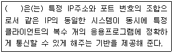
- 포트
- 소켓
- MAC
- 호스트
(정답률: 75%)
17. 다음 중 192.168.0.1이라는 TCP/IP 주소를 가지는 시스템에서 192.168.10.1로 ping이 정상적으로 연결 되도록 환경설정 할 경우 가장 관련이 적은 것은?(subnet은 255.255.255.0, 기본 route는 192.168.0.1, 기본 네트워크 디바이스는 eth0 이다.)
- /etc/sysconfig/network-scripts/ifcfg-eth0
- /etc/resolv.conf
- ifconfig
- modprobe
(정답률: 26%)
18. DNS 서버가 없는 환경에서 네트워크가 정상적으로 동작할 때 telnet www.ihd.or.kr 명령어가 제대로 동작되도록 할 경우 가장 관련이 깊은 설정 파일로 알맞은 것은?
- /etc/hosts.deny
- /etc/hosts.allow
- /etc/hosts
- /etc/sysconfig/network
(정답률: 57%)
19. 다음 중 리눅스에서 네트워크 관련 명령어로 거리가 먼 것은?
- ethtool
- mii-tool
- ipconfig
- route
(정답률: 43%)
20. 다음 중 OSI 7 Layer에서 같은 Layer에 속하지 않는 것은?
- SLIP
- HTTP
- FTP
- DNS
(정답률: 83%)
2과목: 리눅스 시스템 관리
21. useradd 명령에 대한 옵션으로 틀린 것은?
- -g : 소속 그룹을 지정할 때 사용한다.
- -d : 계정의 홈 디렉토리의 경로를 지정할 때 사용한다.
- -e : 관리자가 지정한 날짜까지만 계정이 유효 하도록 지정할 때 사용한다.
- -G : 하나의 그룹을 지정할 때 사용한다.
(정답률: 79%)
22. 리눅스 시스템을 사용하고 있는 계정의 ID, Path, shell, description등이 기록된 파일은?
- /etc/shadow
- /etc/passwd
- /etc/pam.d/login
- /etc/login.defs
(정답률: 61%)
23. 아래와 같은 결과를 확인 할 수 있는 명령어로 알맞은 것은?
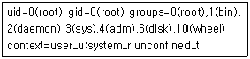
- who
- useradd
- uid
- id
(정답률: 60%)
24. 파일 변경이 되지 않도록 chattr 명령어를 사용하였다. 다음 설명 중 틀린 것은?
- R 옵션을 적용하여 해당 디렉토리와 하위 디렉토리, 파일에 대해 적용할 수 있다.
- +i 옵션을 적용하여 read-only가 되도록 적용 할 수 있다.
- +a 옵션을 적용하면 수정할 때 vi 에디터를 통해 기존 내용을 수정 할 수 있다.
- chattr 명령어를 사용한 상태를 보는 명령어는 lsattr이다.
(정답률: 58%)
25. 다음 명령어의 설명으로 틀린 것은?
- chmod : 파일 또는 디렉토리의 접근 권한을 변경 할 수 있다.
- groupadd : 그룹을 추가 할 수 있다.
- chgrp : 파일과 디렉토리의 소유자와 소유그룹을 변경 할 수 있다.
- usermod : 기존 사용자 계정 정보를 변경 할 수 있다.
(정답률: 56%)
26. 리눅스의 디렉토리에 대한 설명 중 틀린 것은?
- /dev : 각종 디바이스 파일이 위치해 있는데 크게 디바이스와 캐릭터 디바이스로 나뉜다.
- /boot : 시스템 부팅에 관련된 모든 파일을 담고 있다. 부트로더 정보를 포함한다.
- /etc : 시스템 설정 파일이 위치해 있으며, telnet, ftp, ssh등의 설정 파일이 존재한다.
- /var : 시스템 로그 파일이 위치하며, top등의 시스템 성능정보를 가져 올 수 있는 파일들이 위치한다.
(정답률: 58%)
27. CD 이미지 파일인 ihd.iso를 시스템에서 읽어 사용하려 할 때 명령어로 알맞은 것은?
- mount -t cdimg -o loop ihd.iso /mnt/ihd
- mount -t iso9660 -o loop ihd.iso /mnt/ihd
- mount -t cdimg -o loop /mnt/ihd ihd.iso
- mount -t iso9660 -o loop /mnt/ihd ihd.iso
(정답률: 57%)
28. 다음 중 리눅스 실행레벨에 대한 설명으로 틀린 것은?
- Run level 0 : 모든 프로세스를 정지하고 시스템을 정지 시킨다.
- Run level 1 : 리눅스 시스템을 단일시스템(싱글모드)으로 부팅한다.
- Run level 2 : 다중 사용자 모드로 부팅하며, 네트워크 연결을 한다.
- Run level 3 : 리눅스의 모든 기능을 사용할 수 있도록 부팅하며, console모드이다.
(정답률: 70%)
29. 리눅스 시스템에서 디스크를 추가 하여 부팅 시 또는 mount -a 명령어만으로도 디스크 공간을 쓸 수 있게 수정해야 하는 파일로 알맞은 것은?
- /etc/autofs
- /etc/login.def
- /etc/fstab
- /etc/filesystem
(정답률: 75%)
30. 다음과 같은 압축 파일(ihd.tar.gz)이 생성 되었을 때 설명 중 알맞은 것은?
- ihd를 gzip 명령으로 압축 하고 난 뒤 tar 명령으로 하나로 묶었다.
- ihd를 tar 명령으로 묶은 뒤 gzip으로 압축 하였다.
- ihd를 zip 명령으로 압축 하였다.
- ihd를 unzip 으로 압축 하였다.
(정답률: 80%)
31. 다음 mke2fs에 대한 설명 중 틀린 것은?
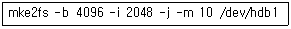
- -b는 파일 시스템 생성간 블록 크기를 4096으로 한다.
- -i는 파일 시스템 생성간 inode 당 바이트수를 2048로 한다.(최대 값은 8192)
- -j는 저널링 파일 시스템을 만든다.(ext3)
- -m 10은 root의 예비 블록을 10% 남겨둔다.
(정답률: 24%)
32. 다음 fsck의 종료 코드에 대한 설명 중 틀린 것은?
- 0 : 에러없음
- 1 : 파일 시스템에 고쳐지지 않은 에러가 남아 있음
- 2 : 파일 시스템 재부팅 필요
- 8 : 연산 에러
(정답률: 59%)
33. 리눅스 시스템에 새로운 디스크를 추가 하려 한다. 순서를 알맞게 나열한 것은?
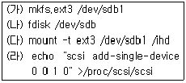
- (나)-(가)-(다)-(라)
- (나)-(라)-(가)-(다)
- (라)-(나)-(가)-(다)
- (라)-(다)-(나)-(가)
(정답률: 40%)
34. 다음은 debugfs를 실행한 결과이다. 각 필드의 설명 중 틀린 것은?
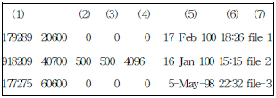
- (1) - inode 의 번호
- (2)(3) - 숫자로 표현된 소유자 / 소유그룹
- (4) - 비트로 표시된 크기
- (5)(6)(7) - 날짜 / 시간 / 파일 이름
(정답률: 72%)
35. 리눅스 시스템 구동 중 하나의 프로세스에 문제가 발생하여, SIGTERM 시그널을 보냈지만, 종료되지 않을 경우 강제 종료 시키는 방법으로 알맞은 것은
- killall 프로세스
- kill all 프로세스
- kill -10 프로세스
- kill -9 프로세스
(정답률: 76%)
36. nice 명령에 대한 설명 중 틀린 것은?
- 프로세스의 우선 순위를 조정 하는 명령어 이다.
- nice는 프로세스 pid의 우선순위에 조정 수치를 더해 결정된다.
- 일반 사용자가 음수의 순위를 조정 할 수 있다.
- 음수 값(작은 값) 일수록 프로세스는 높은 우선 순위를 갖는다.
(정답률: 66%)
37. 다음 중 아래와 같이 출력 되는 명령어로 알맞은 것은?
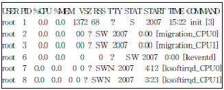
- ps -ef
- ps -aux
- ps -a
- ps -ief
(정답률: 54%)
38. 리눅스에 설치된 패키지의 위치와 파일명을 찾는 방법으로 알맞은 것은?
- rpm -qi
- rpm -ql
- rpm -Uvh
- rpm -qa
(정답률: 24%)
39. 커널 컴파일에 관한 내용 중 틀린 것은?
- 컴파일 환경 설정을 위해 사운드카드, 네트워크 디바이스 등의 하드웨어 정보를 미리 기록하여 참조한다.
- make menuconfig는 콘솔 메뉴식 설정 화면으로 컴파일 시 쉽게 설정 할 수 있다.
- 이전 설정한 정보를 지우거나 새로운 커널 소스를 컴파일 할 경우 make mrproper를 사용하는 것이 좋다.
- 모듈 방식으로 설정하고, 드라이버를 모두 모듈로 한다.
(정답률: 50%)
40. 다음 보기 중 리눅스에서 출력되는 정보의 내용이 다른 하나는 무엇인가?
- cat /proc/meminfo
- vmstat 3 3
- free -m
- iostat 3 3
(정답률: 67%)
41. 시스템에 메인메모리가 8GB가 있다. 이 시스템에 32bit 리눅스(커널버전 2.2)를 설치 시 일반적으로 사용할 수 있는 이론적인 물리적 메모리양으로 알맞은 것은?
- 7GB
- 6GB
- 4GB
- 2GB
(정답률: 52%)
42. 32bit 시스템에서 모든 메모리를 사용할 수 있도록 해주는 리눅스 커널 2.6에 도입된 메모리 제어 기술로 알맞은 것은?
- PSE(Physical Segment Extension)
- PAE(Physical Address Extenstion)
- SMP(Symmetric Multi Processor)
- HT(Hyper-Threading)
(정답률: 20%)
43. 다음 중 리눅스 시스템의 I/O와 관련된 내용으로 틀린 것은?
- DMA는 외부장치로부터 메모리로 직접 바이트열을 보내는 기능을 말한다.
- IRQ는 외부장치가 장치 드라이버에 신호를 전달하는 방법으로 각각마다 고유의 번호를 가지고 있다.
- PC의 구조에는 IRQ, I/O주소의 수에 제한이 있으므로 각 장치 드라이버의 프로그램 중에 I/O주소와 IRQ를 하드코드화 하면 용이하다.
- I/O주소를 사용하면 장치 드라이버가 외부 장치에 데이터를 전달할 수 있다.
(정답률: 50%)
44. 커널 컴파일을 위해 커널 설정을 하는 명령어로 틀린 것은?
- make menuconfig
- make xconfig
- make config
- make mrproper
(정답률: 69%)
45. 타 시스템에서 네트워크 카드에 관련된 드라이버를 새로이 컴파일하여 현재 사용하고 있는 시스템에 복사하여 적용하고자 할 때 이 드라이버가 사용 되기 위해 가장 먼저 수행해야 될 명령어는?
- modinfo
- lsmod
- depmod
- modprobe
(정답률: 25%)
46. 다음 중 리눅스에서 프린터 설정에 관련된 내용으로 틀린 것은?
- lpd
- cups
- printconf
- lspci
(정답률: 60%)
47. 현재 리눅스 커널 컴파일시 사용가능한 네트워크 옵션으로 틀린 것은?
- TCP/IP Version 6
- Wibro
- IPX/SPX
- Apple Talk
(정답률: 44%)
48. 다음 중 시스템에 새로 장착된 사운드카드를 인식하여 사용하기 위해 리눅스에서 사운드카드 설정에 관련된 것으로 틀린 것은?
- alsaconfig
- sndconfig
- kudzu
- lsmod
(정답률: 50%)
49. 시스템의 운영체제가 커널 2.6 기반일 경우 새로 장착되어 설정된 사운드카드의 드라이버 로딩에 대한 환경설정 정보는 어디에 저장이 되는가?
- /dev/null
- /etc/modprobe.conf
- /etc/sysconfig
- /proc/pci
(정답률: 56%)
50. 다음 중 일반적으로 리눅스 커널을 컴파일 해야 하는 경우로 틀린 것은?
- 신규 하드웨어에 대한 지원
- 새로운 커널 보안 패치 적용
- 기존 설치된 100GB 하드디스크 추가 확장
- 기존 시스템 최적화, 성능 향상 및 관리기능 개선
(정답률: 82%)
51. 다음에서 설명하는 것으로 알맞은 것은?
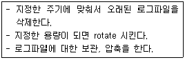
- syslog
- at
- logrotate
- access-log
(정답률: 97%)
52. 시스템 로그 관리(syslog)에 대한 설명으로 틀린 것은?
- syslog의 설정 파일은 /etc/syslog.conf이며, 각 daemon 설정 파일 및 저장 위치를 지정할 수 있다.
- syslog에 설정 파일은 자신의 시스템에서만 기록 가능하다.
- 기본적으로 mail, secure, message, cron등의 로그가 존재한다.
- 여러 대의 서버를 관리하기 위해 원격 로그 시스템을 지정 할 수 있다.
(정답률: 62%)
53. 다음과 같은 정보가 기록된 파일(기본 설정)로 알맞은 것은?
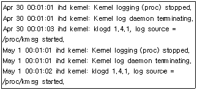
- /var/log/cron
- /var/log/messages
- /var/log/secure
- /var/log/kernel
(정답률: 32%)
54. 다음 중 /var/log/xferlog의 설명으로 알맞은 것은?
- 커널 메세지와 부팅 정보를 담고 있다.
- 송수신 자료와 시간, 송수신을 수행한 원격 호스트, 송수신 파일 정보를 담고 있다.
- 일정한 주기로 수행되는 cron의 정보를 담고 있다.
- 각종 하드웨어 정보 및 장애에 대한 정보를 담고 있다.
(정답률: 65%)
55. TCP Wrapper에 대한 설명으로 틀린 것은?
- xinitd에 의해 제어되는 서비스(데몬)들은 TCP Wrapper에 의해 제어 받는다.
- 네트워크의 침입 차단 제어 할 수 있는 어플리케이션이다.
- 접근 호스트 제어를 위한 설정 파일은 /etc/hosts.allow, /etc/hosts.deny 이다.
- 일반적으로 telnet, ssh, irqbalance가 제어 되는 대표적인 데몬들이다.
(정답률: 60%)
56. 중요한 파일을 백업 받기 위해 /home/ihd/backup.sh 라는 파일을 작성 하였다. 이 파일을 매주 수요일 오전 8시에 백업이 수행 되게 cron에 설정하는 내용으로 알맞은 것은?
- 0 8 * * 3 /home/ihd/backup.sh
- 3 8 0 * * /home/ihd/backup.sh
- 8 0 0 * * /home/ihd/backup.sh
- 0 8 * 3 * /home/ihd/backup.sh
(정답률: 60%)
57. PAM에 대한 설명으로 틀린 것은?
- PAM은 Pluggable Authentication Modules의 약자이다.
- PAM은 애플리케이션들의 인증 방법을 선택할 수 있게 하는 라이브러리의 집합이다.
- PAM의 가장 큰 장점은 유동성이다.
- PAM의 구성 파일은 /lib/pam.d에 저장되어 있다.
(정답률: 43%)
58. tripwire에 대한 설명으로 틀린 것은?
- 시스템에 존재하는 파일들에 대해 데이터베이스에 저장하고 생성된 데이터베이스와 비교하여 추가, 삭제 또는 변제된 파일이 있는지 점검하고 레포팅 하는 무결성 검사 도구이다.
- tripwire는 MD5, SHA, CRC-32 등의 다양한 해시 함수를 제공한다.
- 파일들에 대한 데이터베이스를 만들어 불법적인 외부 침입자에 의한 파일 변조 여부를 판별할 수 있다.
- 두 호스트 간의 통신 암호화와 사용자 인증을 위해 공개키 암호기법을 사용한다.
(정답률: 75%)
59. 백업 정책에 대한 설명으로 틀린 것은?
- 시스템의 전체 용량과 백업 할 가치가 있는 것에 대한 부분을 고려한다.
- 시스템의 성능을 고려하여 항상 Full backup만으로 운영한다.
- Full backup과 Incremental backup을 적절히 적용하여 효율적으로 운영한다.
- 중요 data는 local backup과 remote backup을 고려한다.
(정답률: 84%)
60. dump에 대한 설명으로 틀린 것은?
- 여러 개의 tape 백업이 가능하다.
- 백업이 기존 파일에 내용을 더하면서 수행될 수 없다.
- 파일에 대한 접근 권한 등의 소유권에 대한 사항도 복구 가능하다.
- 어떤 타입의 파일도 백업, 복구 가능하다.
(정답률: 71%)
3과목: 네트워크 및 서비스의 활용
61. 동적인 웹페이지를 구성하기 위해 사용되는 CGI(Common Gateway Interface)에 대한 설명으로 틀린 것은?
- 초기 웹 서비스 구축시 데이터베이스와 연동될 수 있도록 하는데 기여하였다.
- 여러 개의 CGI 스크립트를 동작시켜도 메모리를 많이 차지하지 않는다.
- CGI의 스크립트는 어떤 언어로도 코딩될 수 있으며, 단순해서 사용이 간단하다.
- CGI 스크립트의 작성에 많이 사용되는 언어로는 C, C++, Perl 등이 있다.
(정답률: 68%)
62. 웹서버 프로그램인 아파치 1.3버전과 아파치 2.x 버전에 대한 비교 설명으로 틀린 것은?
- PHP연동 설치시 아파치 1.3버전은 정적, 동적 모듈 모두 지원하고, 아파치 2.x버전은 동적 모듈만 지원한다.
- 아파치 2.x버전이 아파치 1.3버전보다 다양한 형태의 프로세스 관리 기능을 지원한다.
- PHP를 정적 모듈형태로 지원하는 1.3버전이 아파치 2.0버전에 비해 처리속도가 느리다.
- PHP를 동적 모듈형태로 운영하는 것이 정적 모듈로 운영할 때 보다 메모리를 더욱 효율적으로 사용한다.
(정답률: 28%)
63. 아파치 1.3기반으로 웹서버를 운영하고 있는 홍길동은 프로세스가 과다 발생하여 쓰레드(Thread)를 지원하는 아파치 2.X 버전으로 바꾸려고 한다. 소스로 해당 프로그램 설치 시 반드시 지정해야 하는 옵션으로 알맞은 것은?
- --with-mpm
- --enable-mpm
- --enable-proxy
- --enable-cgi
(정답률: 32%)
64. 다음은 아파치 웹서버의 설정 파일인 httpd.conf 파일의 일부이다. 다음의 설정과 관련된 내용으로 틀린 것은?
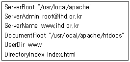
- 웹문서는 /usr/local/apache/htdocs에 저장해야 하고, 첫페이지는 index.html로 작성해야 한다.
- 개인 사용자들은 홈디렉토리안에 public_html 또는 www안에 웹문서를 저장하면 된다.
- 아파치 서버의 루트 디렉토리는 /usr/local/apache 이다.
- 웹서버 관리자의 메일 주소는 root@ihd.or.kr이다.
(정답률: 70%)
65. 아파치 1.3기반으로 웹서버를 운영중에 있다. 현재 운영중인 웹서버 이외에 포트번호 8080으로 추가 운영하기 위해 httpd2.conf 파일 생성후 설정을 하였다. httpd 명령어를 사용하여 아파치 서버를 작동하려고 할 때 필요한 옵션은?
- -d
- -S
- -f
- -X
(정답률: 32%)
66. 리눅스 서버관리자인 홍길동은 MySQL관리자로부터 데이터베이스의 root계정 패스워드를 잊어 버렸다는 연락을 받았다. 패스워드 검사없이 root로 데이터베이스에 접근하도록 해당 데몬을 시작하는 명령으로 알맞은 것은?
- mysql reload
- mysql_install_db
- mysqld_safe --user=root --skip-grant-table &
- mysqladmin -u root reload
(정답률: 67%)
67. 아파치 설치 시 Jserv나 PHP를 동적인 모듈로 만들기 위해 반드시 지정해줘야 하는 도구는?
- ab
- htpasswd
- rotatelogs
- apxs
(정답률: 35%)
68. 웹 페이지에서 오류 메시지가 발생하거나 외부에서 telnet명령을 이용해 웹서버의 80번 포트로 접속한 후 GET 명령을 이용하면 아파치 및 PHP 버전 정보 등이 노출된다. 이러한 정보 노출을 막기 위해 httpd.conf에서 설정하는 항목은?
- HostnameLookups
- ServerName
- AccessFileName
- ServerSignature
(정답률: 48%)
69. 삼바 서버의 환경설정파일인 smb.conf의 문법적 오류를 검사하고 설정 내용을 확인할 때 사용하는 명령으로 알맞은 것은?
- smbclient
- smbstatus
- testparm
- smbmount
(정답률: 64%)
70. 삼바 서버의 인증 레벨 중 사용자(user) 레벨에 대한 설명으로 알맞은 것은?
- /etc/passwd 등록 유무에 상관없이 삼바 유저를 생성하면 사용할 수 있다.
- 리눅스 계정의 패스워드와 삼바 계정의 패스워드는 같게 설정해야 된다.
- /etc/passwd에 등록된 유저는 별도의 삼바 유저로 생성할 필요가 없다.
- 암호화된 암호 파일을 사용한 인증을 제공한다.
(정답률: 50%)
71. NFS 서버를 이용하는 192.168.4.3 클라이언트의 접근을 /etc/hosts.deny파일에 설정하여 차단하고자 할 경우 설정으로 알맞은 것은?
- nfs: 192.168.4.3
- nfsd: 192.168.4.3
- portmap: 192.168.4.3
- 192.168.4.3: nfsd
(정답률: 23%)
72. NFS 서버의 설정 파일인 /etc/exports에 다음의 조건으로 설정할 경우 알맞은 것은?
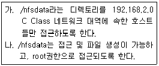
- /nfsdata 192.168.2.0(rw,no_root_squash)
- /nfsdata 192.168.2.0/24(rw,no_root_squash)
- /nfsdata 192.168.2.0(rw,root_squash)
- /nfsdata 192.168.2.0/24(rw,root_squash)
(정답률: 38%)
73. NFS 서버의 주소가 192.168.4.254이다. NFS 클라이언트에서 서버에 공유되어 있는 디렉토리를 확인 하고자 할때, 명령어로 알맞은 것은?
- showmount -e 192.168.4.254
- exportfs -e 192.168.4.254
- nfsstat -s 192.168.4.254
- nhfsstone -e 192.168.4.254
(정답률: 76%)
74. 단독으로 작동하는 ProFTPD 서버의 전체 접속 인원을 늘리고자 한다. 다음 중 proftpd.conf 파일에서 변경해야할 항목은?
- Maxclients
- MaxInstances
- Standalone
- MaxClientsPerHost
(정답률: 71%)
75. 메일 서버가 정상적으로 작동하는지 관련 서비스 포트를 점검하려고 한다. 다음 중 가장 관련이 없는 포트는?
- 25
- 110
- 123
- 143
(정답률: 74%)
76. 다음은 메일 서비스와 관련된 프로그램에 대한 설명이다. 어떤 프로그램에 대한 설명인가?
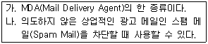
- procmail
- Qmail
- Postfix
- Majordomo
(정답률: 62%)
77. 다음은 ProFTPD 서버의 설정 파일인 proftpd.conf 파일의 일부이다. 다음의 설정과 관련된 내용으로 알맞은 것은?
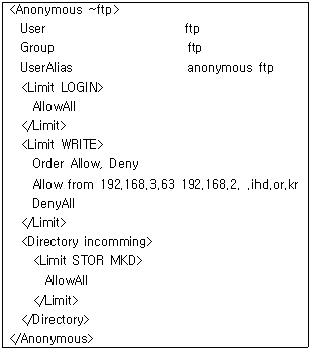
- 192.168.4.5에서 접속하는 익명사용자는 하위의 incomming에 파일업로드가 가능하다.
- 192.168.2.5에서 접속하는 익명사용자는 홈디렉토리에 파일 업로드를 할 수 없다.
- 192.168.3.63에서 접속하는 익명사용자는 incomming에 파일업로드가 불가능하다.
- 접속한 IP주소에 상관없이 접속한 익명사용자는 홈디렉토리에 파일업로드가 가능하다.
(정답률: 34%)
78. 리눅스기반 호스팅 회사로 메일 서버를 Sendmail로 운영하고 있다. 한 대의 리눅스 서버에 호스팅 중인 2개의 회사에서 동시에 ceo라는 E-mail 계정을 요구하였다. 이 문제를 해결할 수 있는 파일로 알맞은 것은?
- /etc/mail/sendmail.mc
- /etc/mail/virtusertable
- /etc/mail/local-host-names
- /etc/aliases
(정답률: 45%)
79. /etc/mail/access 파일에 192.168.3.0 네트워크 대역에 속한 호스트 사용자들이 메일을 보낼 수 있도록 허가하도록 하는 설정으로 알맞은 것은?
- 192.168.3 DISCARD
- 192.168.3 RELAY
- 192.168.3 REJECT
- 192.168.3 550 email ok
(정답률: 48%)
80. 서버 관리자인 홍길동은 리눅스 시스템 및 Sendmail 서버를 관리하고 있다. 고객지원부서에서 webmaster 계정으로 들어오는 메일을 고객지원부서 전체 사원이 받을 수 있도록 설정해 달라는 요청을 받았다. 설정이 필요한 파일로 알맞은 것은?
- /etc/mail/sendmail.mc
- /etc/mail/virtusertable
- /etc/mail/local-host-names
- /etc/aliases
(정답률: 36%)
81. 단독데몬(standalone)과 슈퍼데몬인 xinetd를 사용 하는 것과 비교한 내용 중 틀린 것은?
- 자주 사용하지 않는 서비스들은 xinetd로 운영 하는 것이 좋다.
- 접속자가 많은 웹서비스는 단독 데몬형태로 운영하는 것이 좋다.
- xinetd를 사용하면 관련 서비스들이 항상 메모리에 상주하지 않아 시스템 메모리 부족시 유용하다.
- xinetd를 통해 운영할 경우 단독 데몬 형태보다 클라이언트들이 해당 서비스를 더욱 빠르게 이용할 수 있다.
(정답률: 36%)
82. 아래 DNS 서버의 forward 영역 파일에 대한 설명으로 틀린 것은?
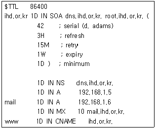
- ihd.or.kr의 네임서버는 dns.ihd.or.kr이라는 이름을 갖는다.
- 메일서버는 mail.ihd.or.kr이며 IP주소는 192.168.1.6 이다.
- ihd.or.kr와 dns.ihd.or.kr의 IP주소는 192.168.1.5 이다.
- ihd.or.kr은 dns.ihd.or.kr 또는 root.ihd.or.kr로도 접근이 가능하다.
(정답률: 35%)
83. 다음은 xinetd에 관리하는 telnet서비스를 설정한 예이다. 다음의 설명으로 틀린 것은?
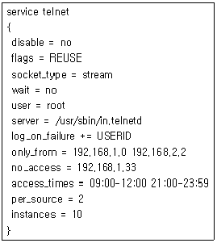
- 텔넷서비스를 이용할 수 있는 최대 연결수는 10이고, 한 호스트당 접속할 수 있는 연결수는 2이다.
- 192.168.1.33 호스트는 시간에 상관없이 텔넷을 이용할 수 없다.
- 192.168.1.22 호스트는 지정한 시간에 텔넷을 이용할 수 있다.
- 192.168.2.2 호스트는 시간에 상관없이 항상 텔넷을 이용할 수 있다.
(정답률: 44%)
84. 리눅스 대학교(linux.ac.kr) 서버관리자인 홍길동은 학과체계에서 학부제로 바뀌면서 DNS 서버 설정 요청을 받았다. 다음과 같이 설정하기 위해 사용해야 할 레코드로 알맞은 것은?
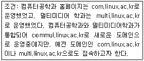
- SOA
- PTR
- CNAME
- NS
(정답률: 46%)
85. DNS 서버의 리버스 존(reverse zone) 파일은 IP주소에 대한 호스트 이름을 지정할 때 사용한다. 이러한 설정을 위해 리버스 존 파일에 사용 되는 레코드로 알맞은 것은?
- SOA
- PTR
- CNAME
- NS
(정답률: 64%)
86. 다음은 DNS서버의 설정 파일인 /etc/named.conf 파일의 일부이다. 다음의 설정과 관련된 내용중 틀린 것은?
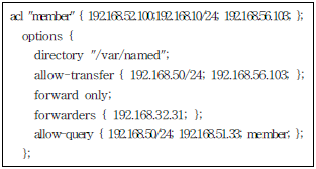
- 192.168.50.2 주소를 갖는 호스트는 보조 네임 서버로 구성가능하다.
- 192.168.4.20 주소를 갖는 호스트는 이 서버에 질의를 할 수 없다.
- 외부에서 질의요청시 192.168.32.31에 넘기고, 만약 질의를 못하면 이 서버가 응답해준다.
- 192.168.56.103 주소를 갖는 호스트는 질의도 할 수 있고, 보조 네임 서버로 구성가능하다.
(정답률: 35%)
87. 공인IP가 부족하게 되어 사설IP를 이용해 사내 네트워크를 구성하게 되었다. 추가로 프록시(Proxy) 서버를 구축하여 강제로 사용하도록 하였다. 다음 설명 중 틀린 것은?
- 프록시 서버의 캐시 기능으로 인해 사용자들은 일부 사이트의 인터넷 이용 속도가 빨라질 수 있다.
- 사내망 사용자들이 외부의 특정 사이트에 접속하는 것을 차단할 수 있다.
- 프록시 서버를 통해 사용자들의 외부 사이트 접속 내역을 알 수 있다.
- 프록시 서버를 통해 회사 외부에서 사내 사용자 시스템으로 쉽게 접속할 수 있다.
(정답률: 60%)
88. 다음은 프록시 서버인 squid의 환경설정파일인 squid.conf의 일부분이다. 디스크에 생성되는 프록시 서버의 크기는 몇 MB인가?
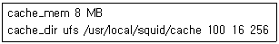
- 8
- 100
- 16
- 256
(정답률: 25%)
89. 한 대의 리눅스 서버로 telnet, ssh, samba 서버를 운영하였으나 과부하로 인해 3대의 시스템을 구매하여 각각의 서버를 분할하기로 했다. 기존 시스템의 계정을 그대로 사용하고자 할 때 구축하면 유용한 서버는?
- DNS서버
- NFS 서버
- CVS 서버
- NIS 서버
(정답률: 45%)
90. NIS 클라이언트에서 NIS 서버로부터 제공되는 사용자 계정들의 목록을 확인하고자 한다. 이 때 사용해야할 명령어로 알맞은 것은?
- rpcinfo
- ypbind
- ypcat
- ypserv
(정답률: 48%)
91. 다음에 나열된 프로그램들은 NIS 서버 및 클라이언트에서 사용되는 프로그램들이다. 나열된 것 중 나머지 3개와 종류가 다른 것은?
- ypserv
- rpc.ypxfrd
- ypbind
- rpc.yppasswdd
(정답률: 17%)
92. 다음 DHCP 서버와 관련된 내용 중 틀린 것은?
- 클라이언트에게 주소 배정시 공인IP주소뿐만 아니라 사설IP주소도 사용가능하다.
- IP주소와 게이트웨이는 클라이언트에게 할당 할 수 있으나 네임서버는 할당할 수 없다.
- 클라이언트에게 고정적으로 특정한 IP주소를 할당할 수 있다.
- 클라이언트에게 IP주소를 일정 시간동안만 할당 할 수 있다.
(정답률: 48%)
93. 다음 중 CVS(Concurrent Versions System)에 대한 설명으로 틀린 것은?
- 공동 프로젝트에서 효율적인 버전 관리를 위해 많이 사용한다.
- 같은 파일을 여러 사람이 함께 작업하는 것을 지원한다.
- 클라이언트와 서버 구조로 이루어져 있어서 하나의 컴퓨터에는 실행할 수 없다.
- CVS와 같은 종류의 프로그램에는 Subversion(SVN)이 있다.
(정답률: 71%)
94. 다음은 DHCP 서버의 설정 파일인 dhcpd.conf 파일의 일부이다. 다음 설정과 관련된 내용 중 틀린 것은?
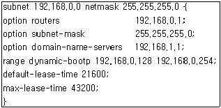
- 클라이언트에게 할당되는 네임서버 주소는 192.168.1.1이다.
- 클라이언트에게 할당되는 게이트웨이주소는 192.168.0.1이다.
- 클라이언트에게 192.168.0.128부터 192.168.0.254까지 할당된다.
- 클라이언트에게 기본적으로 할당되는 시간은 3시간이다.
(정답률: 58%)
95. 다음 중 CVS에서 사용하는 명령어에 대한 설명으로 틀린 것은?
- import: CVS로부터 소스를 가져올 때 사용한다.
- update: 자신의 작업 내용을 서버에 업로드 한다.
- log: 작업 내용을 확인할 때 사용한다.
- diff: 변경된 내용을 확인할 때 사용한다.
(정답률: 57%)
96. 서버로 사용하는 시스템이 외부에서 접속이 잘 안되고 속도도 엄청 떨어졌다. netstat 명령으로 상태를 검사해보니 state부분에 SYN_RECEIVED 라고 되어있는 연결들이 많았다. 이러한 현상이 발생하는 가장 유력한 공격은?
- SYN Flooding
- Buffer Overflow
- Spoofing
- Sniffing
(정답률: 77%)
97. 학교, PC방, 회사 등의 공용 네트워크를 사용하는 PC에서 서버로 접속할 경우 스니핑(Sniffing Tool)을 사용해서 사용자의 아이디, 패스워드, 주민등록번호 등의 개인정보가 노출될 수 있다. 이것을 방지하기 위해 서버에 공개키 방식을 이용해 구축해야 할 것으로 가장 알맞은 것은?
- IDS
- SSL
- DMZ
- Firewall
(정답률: 57%)
98. 다음 중 DOS(Denial of Service) 공격의 특징이 아닌 것은?
- 공격의 원인이나 공격자를 추적하기 힘들다.
- 다른 공격을 위한 사전 공격으로 이용될 수 있다.
- 루트 권한을 획득하기 위한 공격이다.
- 데이터를 파괴하거나 변조, 훔쳐가는 것이 목적인 공격이 아니다.
(정답률: 67%)
99. 다음에서 설명하는 내용에 대한 것으로 가장 알맞은 것은?
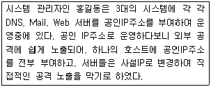
- NAT
- VPN
- TCP wrapper
- IDS
(정답률: 50%)
100. 보안 강화를 위해 단순하게 설정된 일반 계정 사용자의 패스워드를 점검하고자 한다. 이 때 사용가능한 보안 프로그램은?
- Nessus
- SATAN
- John The Ripper
- Tripwire
(정답률: 50%)